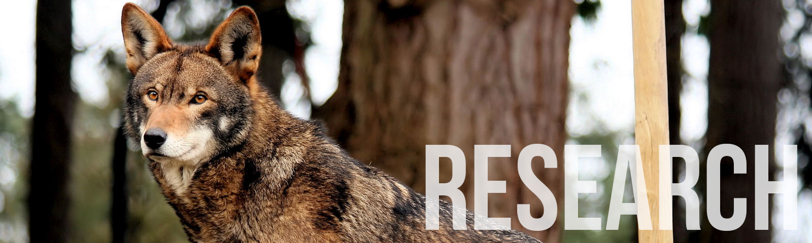
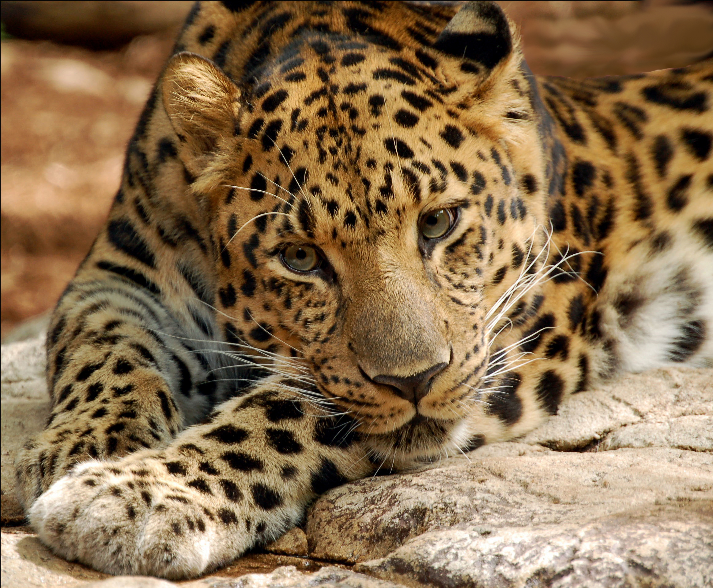

Amur Leopard
Amur leopard's are native to the Primorye region of southeastern Russia and the Jilin Province of northeast China. They are classified as critically endangered as there are less than 70 remaining in the wild. The poaching of these leopards for their fur is the main threat to their survival.